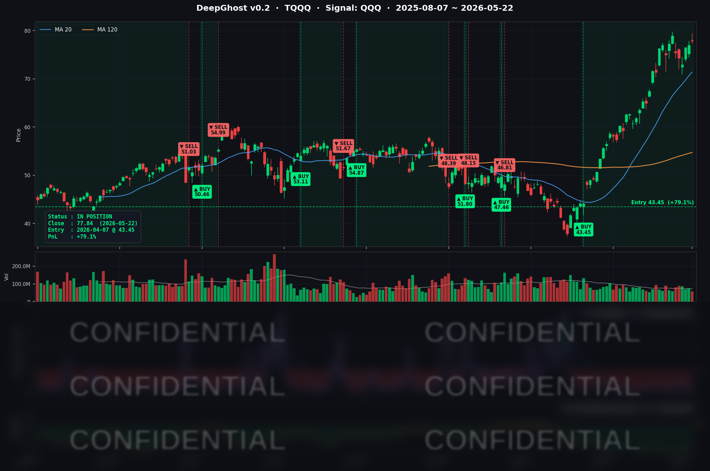

엔비디아 홀로 약세입니다. SpaceX, OpenAI, Anthrophic 3대 IPO로 인한 관심 하락이 원인인 듯합니다.
실적은 견조하고 내년에도 2배 성장이 예측됩니다. 시간이 지나면 제자리로 돌아올 것입니다.
금리의 패닉셀이 끝나고 엔비디아 실적이 좋으면 시장이 다시 상승 탄력을 받을 것으로 예측했었습니다.
예상대로 이어지고 있고, 엔비디아 가격이 싸다는 인식이 생기면 이어서 나스닥 전반적인 추가 상승이 올 수도 있습니다.
📊 오늘의 매매 신호
| 항목 | 내용 |
|---|---|
| 오늘 할 일 | ✅ 아무것도 안 해도 됩니다 |
| 포지션 상태 | 📈 TQQQ 보유 중 (IN POSITION) |
| 매수 진입일 | 2026-04-07 (46거래일째) |
| 진입가 → 현재가 | $43.45 → $77.84 |
| 현재 포지션 수익 | +79.15% (신고가 갱신) |
TQQQ 시그널 — IN POSITION
현재 상태: 매수 포지션 유지 중 | 누적 수익률 +79.15%

시그널이 말하는 것
오늘도 Ghost.AI는 TQQQ에 대해 강한 상승 추세를 감지하고 있습니다. 어제 매파적 FOMC 의사록 충격에도 시그널 강도가 흔들리지 않았는데, 오늘은 장기 금리가 떨어지면서 매수 압력이 한층 더 깊은 영역으로 들어갔습니다. 청산 임계점까지는 여전히 큰 거리를 두고 있습니다.
QQQ 일간 +0.42%가 TQQQ에서 +1.16%로 증폭됐고(약 2.76배 — 일중 변동성까지 캡처), 46거래일째 보유 중인 실 포트폴리오 수익률은 어제 +77.10%에서 +79.15%로 +2.05%p 도약했습니다.
오늘 미국 마감 — 주요 이슈 서머리
지수 마감
| 지수 | 종가 | 등락률 |
|---|---|---|
| S&P 500 | 7,473.47 | +0.37% (8주 연속 상승) |
| 나스닥 종합 | 26,343.97 | +0.19% |
| 다우존스 | 50,579.70 | +0.59% (신고가) |
| Russell 2000 | 2,869.23 | +0.91% (3거래일 누적 +4.40%) |
메모리얼데이 주말을 앞두고 매수세가 들어왔습니다. 다우는 신고가 50,579.70(+294pt) 갱신, S&P 500은 8주 연속 상승, Russell 2000은 3거래일 연속 강세로 Great Rotation 모멘텀이 재가속됐습니다. NVDA만 어닝 후 차익실현 매물에 -1.90%로 단독 약세.
국채 금리 & 연준
| 만기 | 수익률 | 전일 대비 |
|---|---|---|
| 3개월 (^IRX) | 3.585% | +0.3bp |
| 5년 (^FVX) | 4.256% | -0.1bp |
| 10년 (^TNX) | 4.558% | -2.8bp |
| 30년 (^TYX) | 5.064% | -4.8bp |
장기물 중심으로 금리가 떨어지는 bull flattener가 펼쳐졌습니다. 5/21 매파 의사록의 충격이 1일 만에 일부 되돌림됐고, 미시간 소비자심리지수 사상최저 데이터가 채권 매수세를 자극한 결과입니다. 듀레이션 부담 완화 → 빅테크/소형주 동반 강세가 오늘 시장의 핵심 매크로의 원인이며, TQQQ +1.16% / IWM +0.93%가 그 결과로 나왔습니다. 연준 위원 단독 스피치는 없는 quiet day였고, 매파 정책 기조 자체는 유지됩니다.
핵심 이슈
- 다우 신고가 + S&P 8주 연속 상승 + Russell 2000 3일 누적 +4.40% — 메모리얼데이 주말 앞두고 매수세 회복. VIX 16.70으로 추가 하락, 위험선호 회복 시그널 강화.
- QCOM +11.60% 대폭등 ($213.41 → $238.16) — Stellantis 자율주행 딜 확대(Snapdragon Digital Chassis + Ride Pilot ADAS), CEO 트럼프 방중 동행, 양자컴 정부 투자 패키지에서 $100M 수령, NVIDIA AI 클러스터 협업까지 3중 호재 동시 발현. 3월 저점 대비 +84% 회복.
- 미시간 소비자심리지수 사상최저 44.8 (예상 48.2, 1952년 조사 시작 이래 최저) — 가솔린 가격 상승이 직접 원인. 1년 인플레 기대 4.8%, 장기 기대 3.9%로 상승. 그러나 자산시장은 무시하고 상승 — Bad is Good 현상. 즉, 경기가 죽을 것 같으면 금리를 내리겠지 하는 심리로 주식 상승.
매크로 체크
- WTI $97.00 (+0.68%), Brent $103.94 (+1.33%) — 주간 기준 WTI -8% / Brent -5% 큰 폭 하락. 美-이란 협상 진전 기대.
- Gold $4,510.50 (-0.65%) — 안전자산 수요 둔화, 위험선호 회복과 동행.
- VIX 16.70 (-0.36%) — 17 하회, 정상 변동성 구간 low end.
- CNN 공포탐욕 지수 약 61 (Greed) — 메모리얼데이 quiet trading 영향.
커버리지 종목 동향
| 종목 | 5/21 종가 | 5/22 종가 | 등락률 | 비고 |
|---|---|---|---|---|
| AAPL | 304.99 | 308.82 | +1.26% | 빅테크 강세 견인, WWDC 임박 모멘텀 |
| NVDA | 219.51 | 215.33 | -1.90% | 어닝 후 차익실현 2일째, 2일 누적 -3.64% |
| MSFT | 419.09 | 418.57 | -0.12% | 사실상 보합 |
| GOOGL | 387.66 | 382.97 | -1.21% | Communications 섹터 약세 동조 |
| META | 607.38 | 610.26 | +0.47% | 자체 모멘텀 유지 |
| AMZN | 268.46 | 266.32 | -0.80% | 4일 강세 후 차익실현 |
| TSLA | 417.85 | 426.01 | +1.95% | 로보택시 모멘텀, $430 접근 |
| NFLX | 89.30 | 88.60 | -0.78% | Communications 섹터 약세 |
| AVGO | 414.57 | 414.14 | -0.10% | 보합 |
| QCOM | 213.41 | 238.16 | +11.60% | Stellantis + 방중 + 양자컴 3중 호재 |
| INTC | 118.50 | 119.84 | +1.13% | QCOM 폭등 반도체 동반 강세 |
시장과 시그널 — 오늘의 인사이트
1) NVDA 매도 시그널 — 어닝 트리플 비트의 종착역
5/21 어닝은 완벽했습니다. Q1 매출 $81.6B, 데이터센터 +92% YoY, Q2 가이던스 $91B, Baird 목표가 $300→$500. 그러나 시장 반응은 5/21 -1.77% + 5/22 -1.90% = 2일 누적 -3.64%의 차익실현 매도였습니다.
모델은 5/21까지는 시그널 약화를 노이즈로 흡수했지만, 오늘 추가 -1.90%가 결정타가 됐습니다. 시그널이 청산 임계점을 넘어서며 매도 트리거가 발효됐고, 다음 거래일(5/26 화) 시초가에 실제 매도 체결됩니다. 11일 보유 결과는 -1.47%의 소폭 손실로 마감 예정. 같은 날 다른 빅테크는 전부 강세(AAPL +1.26%, QQQ +0.42%, SPY +0.39%)인 가운데 NVDA만 단독 약세 — 모델이 어닝 펀더멘털이 아니라 가격 반응을 더 정량적으로 신뢰한다는 사례입니다.
2) TQQQ +79.15% 신고가 — yield 후퇴가 모델의 음수권을 강화
장기물 yield 후퇴(10Y -2.8bp, 30Y -4.8bp)는 듀레이션 긴 빅테크의 멀티플 부담을 완화시켰고, 그 효과를 TQQQ가 +1.16%로 가장 직접 받았습니다. 모델 입장에서 QQQ·SPY의 매수 압력 지표는 오늘 미세하게 더 깊어졌습니다. 어제 매파 충격에도 흔들리지 않았던 음수권이, 오늘 yield 후퇴를 만나며 한층 더 단단해졌습니다.
내일을 위한 체크리스트
- [ ] 5/25(월) 메모리얼데이 — 미국 증시 휴장
- [ ] 5/26(화) 시초가: NVDA 매도 체결 가격 (휴일 갭 가능)
- [ ] 5/26(화) 시초가: TSLA / AMZN 매수 트리거 발효 여부
- [ ] 컨퍼런스보드 소비자신뢰지수 — 미시간 record-low와 대조 확인
- [ ] 2년물 국채 입찰 — 매파 의사록 후 단기금리 수요
- [ ] PCE 데이터(5/30) — 매크로 변곡점, 인플레 재가속 시 매파 강화
- [ ] QCOM 모멘텀 follow-through — 트럼프 방중 결과 발표
Ghost.AI — Quantitative AI Investment
Model: DeepGhost v0.2 | Transformer-Based Deep Learning
Coverage: 13 tickers | Updated every trading day after US market close
⚠️ 본 자료는 정보 제공 목적으로만 작성되었으며 투자 권유가 아닙니다. 모든 투자의 책임은 투자자 본인에게 있습니다. 과거 성과가 미래 수익을 보장하지 않습니다.